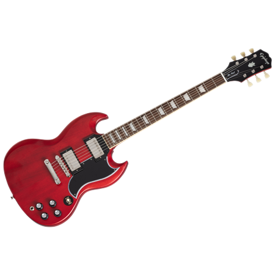

Газораспределительный механизм (ГРМ) — часть двигателя внутреннего сгорания, которая обеспечивает впуск наполнение цилиндров свежим воздухом (или топливно-воздушной смесью) и выпуск отработанных газов в выхлопную систему.
Клапанный ГРМ включает один или два распределительных вала (в расчете на один ряд цилиндров), а также коромысла, пружины, клапаны и т. д.
Существуют также конструкции ГРМ с вращающимися или качающимися распределительными гильзами или золотниками.
Система привода распределительного вала четырёхтактного двигателя обеспечивает его вращение с угловой скоростью, равной 1/2 угловой скорости коленвала.
ГРМ также может иметь как фиксированные фазы газораспределения, так и регулируемые, в зависимости от частоты вращения коленвала и других факторов.

If you click on the "Hide" button, I will disappear.